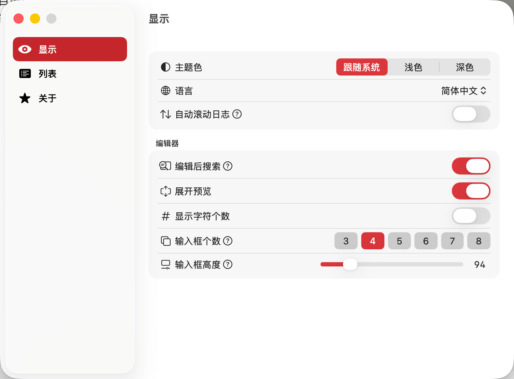

偏好设置

偏好设置是 TransX
的全局配置中心，用于定制应用程序本身的行为和外观，而非特定项目的管理策略。这里的设置会影响
TransX
在所有项目中的表现，包括界面风格、交互方式、性能选项等应用级别的参数。
与"项目配置"的区别在于：
- 偏好设置（Settings/Preferences）：影响应用程序本身，对所有项目生效，保存在系统用户配置中
- 项目配置（Project
Preferences）：影响单个项目的管理方式，仅对当前项目生效，保存在项目配置文件中
配置模块说明
界面外观和主题配置。控制 TransX 的视觉呈现和用户界面布局：
- 主题模式：浅色、深色或跟随系统自动切换
- 字体配置：编辑区和列表区的字体族、大小、行间距
- 色彩方案：自定义高亮颜色、状态指示颜色
- 界面密度：紧凑模式或宽松模式，影响表格行高和间距
显示配置直接影响长时间使用的舒适度和视觉疲劳程度。建议根据个人习惯和工作环境光线调整，例如：
- 低光环境使用深色主题减少眼睛刺激
- 长时间阅读文本时使用更大的字体和行距
- 高分辨率屏幕可以使用紧凑模式显示更多内容
内容列表的行为和显示选项。精细控制主窗口内容区的交互体验：
- 默认排序方式：按键名、按修改时间、按翻译状态等
- 列显示配置：选择显示哪些列，调整列的顺序和宽度
- 行为选项：
- 双击行为（编辑/预览/无操作）
- 单选或多选模式
- 选中行的保持策略
- 上下文菜单：右键菜单的可用选项
合理配置列表行为可以显著提升内容浏览和编辑的效率，特别是在处理包含数百上千条目的大型
.strings 文件时。
应用程序信息和系统集成。提供 TransX 的基本信息和授权管理：
- 版本信息：当前安装的 TransX 版本号和构建号
- 许可证管理：
- 查看许可证状态（试用版/正式版/企业版）
- 输入或更新许可证密钥
- 查看许可证的有效期和授权范围
- 技术支持信息：
- 开发团队联系方式
- 问题反馈渠道
- 用户社区和文档链接
- 诊断信息：
关于页面也是获取帮助和支持的入口，遇到问题时可以从这里获取诊断信息或联系支持团队。
访问偏好设置
TransX → 偏好设置（Preferences）或快捷键 ⌘,（Command +
逗号）
配置的保存位置
偏好设置保存在系统的用户配置目录中。
这些配置跨项目共享，但独立于项目文件，不会随项目一起传播。
最佳实践建议
- 首次使用时设置显示选项：根据个人习惯调整界面，提升长期使用的舒适度
- 启用自动更新检查：及时获取新功能和bug修复
- 保留默认配置的备份：自定义前记录默认值，必要时可以还原
- 定期检查更新日志：了解新版本的功能变化，可能有更好的配置选项